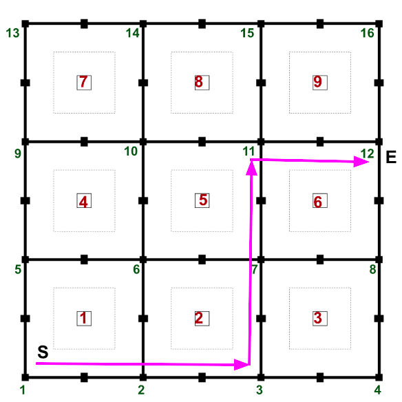

CS684: Embedded System Course
Lab 3: Lustre/Heptagon implementation of Search & Rescue
Aim
In this lab, the robot should reach to destination along with scanning the plots by using Line following and Path planning algorithm. Hence an algorithm has to be developed for Line following and Path planning in Heptagon.
Arena Description:
Refer to the arena image given below:

- This is the arena provided for the project. There are 9 plots in the arena numbered from 1 to 9 (written in red) that has to be scanned by the robot while traversing the arena.
- The intersection of black lines are called nodes and are numbered from 1 to 16 (written in green). The path covered by the robot is represented using the nodes which has been covered.
- For a plot, there are 4 mid_nodes from which it can be scanned as shown below. A plot will be considered scanned only if the robot reaches any of the 4 mid_nodes numbered from 1 to 4 (written in blue). Hence each plot will have 4 mid_nodes from which it can be scanned.
Algorithm
- For this lab, the start position (S) of the robot is node 1 (facing upward) and the end destination is node 12 (E) marked using pink arrows in the above arena image.
- Task is to reach to node 12 by following the black line using Line following algorithm and keeping the track of nodes visited and plots scanned using path planning algorithm.
- Use PID controller for Line following.
- Black line following has to be done using the white line sensors provided. 5 sensors will be provided and the team can decide the position of the sensors.
- Each sensor value ranges between: 0 to 1023.
- For example, if you have chosen the threshold value for the sensor as 400, if a sensor value is less than 400 then that particular sensor is not on the black line and if the value of the particular sensor is greater than threshold then that sensor is on the black surface.
- So depending upon the number of sensors on black line and white surface, robot have to decide whether it is on black line or node or mid_node. The same cases as given in Lab 1 (FSM) applies here as well but rather than binary values, now you have to consider values between 0 to 1023.
- Hence the input to the Heptagon node will be the values from these 5 sensors. If only middle sensor is on the line then follow the black line, if it is a node (depending on the number of sensors on black) then keep a track of it to reach to next destination node and if it has detected a mid_node (depending on the number of sensors on black) then scan the plot and keep track of the plot visited using path planning algorithm.
- Likewise, team has to assume different scenarios or test cases which may come across while robot is traversing the arena.
Input & Output format:
- 5 inputs of white line sensors are required.
- From the final node, 4 outputs are required: plot_mid_node, path, direction, (vel_left, vel_right) : int
- plot_mid_node: This should represent information about the plots visited and the mid_node from which each plot is scanned. For example, if plot 1 is scanned from mid_node numbered 2, then the pair will be represented as '12'.
- path: This should represent the node detected by the robot, i.e the nodes through which the robot passes. (numbered 1 to 16)
- direction: This should contain the direction followed by the robot at each node. Refer to below table for representation of different directions.
- (vel_left, vel_right): This represents the velocities of the left and right motors for a particular input combination of 5 white line sensors.
| Direction | Representation |
|---|---|
| Stop | 0 |
| Forward | 1 |
| Left | 2 |
| Right | 3 |
| Backward | 4 |
Example
-
Consider the case where the robot travels straight from node 1 to 3 scanning the plots 2 and 3 and takes a left turn. The ouput format for plot_mid_node, path and direction will be:
- plot_mid_node = [11,....,21...]
- path = [2,....3]
- direction = [3,1,1,2]
-
While following the straight line, you will have to correct the position of the robot using PID algorithm. Consider the traversal from node 2 to 3. You have to provide sample inputs and outputs in tabular form. Assume that while the robot is moving straight from node 2 to 3, it deviates from the black line towards left. If the second sensor from left is now on the line (instead of middle sensor which should be the ideal case while travelling on the line), it has to take a slight turn to the right for bringing the robot back on line. Hence the motor velocities have to be modified accordingly.
-
The velocities can be represented using values between 0 and 100 where giving 0 stops that particular motor.
-
We will be testing your code using different input combinations for the sensors. The testcases you must consider should include,
- How the robot can stay on the black line with little adjustments?
- How does the robot differentiate between the black line and black nodes?
- How the sensor values will change while the robot takes left or right turns at the nodes?
-
Now consider the case stated in the above example of the robot deviating to the left. A sample input for this case can be considered as [x,y,x,x,x] where y represents the analog sensor value below threshold which is on the line and x represents the analog sensors value above threshold which are on white background. The output for this particular case will then be (1,0) since right turn has to be taken for correcting the path.
-
Each element in the direction corresponds to the direction (numbered 0 to 4) taken at the node present in the path.